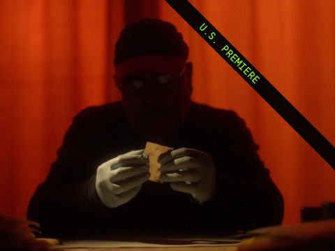

Panel · DX² · Double Exposure 2025
Closed Doors, Open Wounds: Investigating Hidden Online Harm
Friday, October 31, 2025 · 1:15 PM–2:15 PM · Johns Hopkins University Bloomberg Center, Fourth Floor, Link Room
Predators who manipulate people in mental health crisis thrive in the shadows: closed groups, encrypted chats, disappearing platforms, and loopholes in policy and law. Joy Ash’s new documentary Poisoned, based on reporting by James Beal, deputy investigations editor at The Times of London, shines a light on this hidden ecosystem and the devastating ripple effects on families and communities. Kenneth Law, a Canadian former chef, allegedly sent 1,000–1,200 packages to people in distress across 41 countries, with authorities linking dozens of UK deaths and hundreds worldwide to products tied to him as he awaits trial on 14 counts of murder and 14 counts of aiding or counseling suicide, which he denies. Poisoned traces how Beal, working with affected families, exposed this supply chain and the suicide forums that surfaced it, while navigating legal risk, trauma, and the line between accountability and amplification.
Recording
Films discussed

PoisonedJoy Ash2025 · 90 min
Sources
Related sessions
- 2026 · Fri Nov 6 · 1:15pmPanelCast Out and Speaking UpLibby Liu, Miriam Shor, Ashley Kostial, Jeremiah Schofield, Matt Drange, Amelia O’Rourke-Owens
- 2022 · Thu Oct 13 · 10:00 AMConversation · DX²Opening Conversation: The Making of NavalnyDaniel Roher, David Filipov, Maria Pevchikh
- 2022 · Fri Oct 14 · 10:00 AMPanel · DX²Facing GoliathHamza Syed, Byron Hurt, Jennifer Baichwal, Nathan Halverson, Amanda Pike, Kathy Davidov
- 2019 · Thu Oct 10 · 4:00 PMPanel · DX²The UndertowRamona Diaz, Courtney Radsch, Andalusia Knoll Soloff, Nanfu Wang, Brenda Coughlin
- 2025 · Thu Oct 30 · 9:30 AMPanel · DX²One Step Ahead: Protecting Stories and Sources in a Shifting Legal LandscapeRenee Griffin, Alison Schary, Mary Inman, Micah Ratner, Sig Libowitz
- 2025 · Sat Nov 1 · 10:00 AMWorkshopWorkshop: Bulletproof Your FilmEric Feder
- 2025 · Sat Nov 1 · 11:30 AMWorkshopWorkshop: Pro Bono Legal Clinic for Investigative StorytellersAzeezat Adeleke, Chelsea Kelly, Eric Feder, Sig Libowitz, Mary Inman
- 2025 · Sat Nov 1 · 1:00 PMWorkshopWorkshop: Digital Security in the Surveillance AgeAsh Guevara